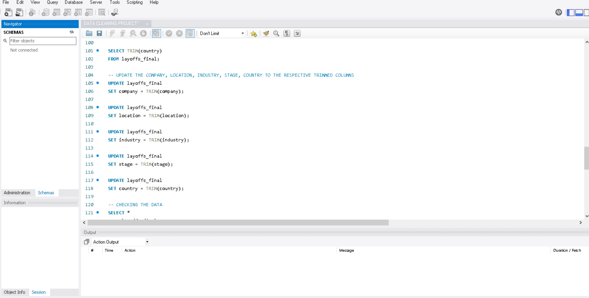

MYSQL DATA CLEANING PROJECT
 Global Company Layoffs Data Cleaning Project
In this project, I worked with a raw dataset downloaded from GitHub that documents layoffs across companies worldwide during the COVID-19 pandemic. Using MySQL, I performed comprehensive data cleaning to transform the dataset into a more accurate and structured format. Key cleaning tasks included:
- Removing duplicate records to ensure data accuracy
- Standardizing data formats for consistency across fields
- Addressing missing values and ensuring completeness
- Optimizing data structure for further analysis
This project highlights the importance of data cleaning in making raw datasets usable for meaningful insights and analysis. It serves as a foundation for understanding the impact of the pandemic on global employment trends.